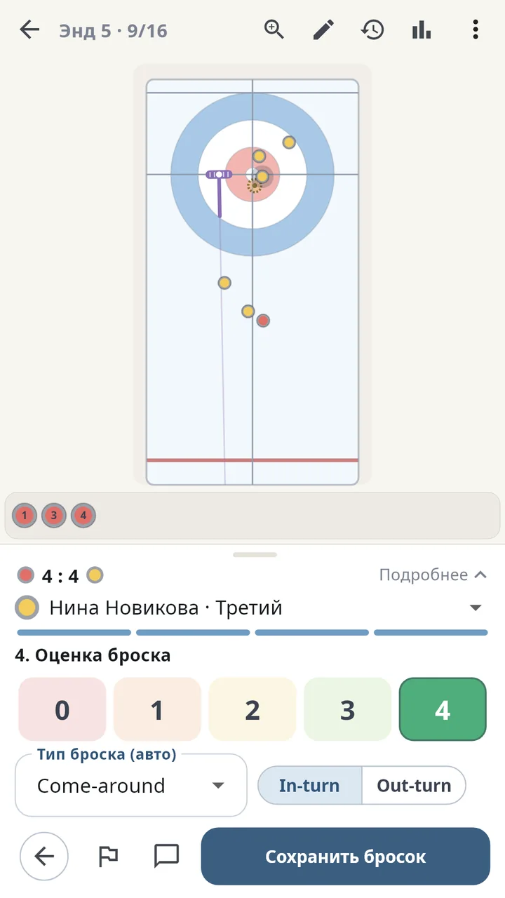

Запись
Каждый бросок за несколько касаний
Поставьте щётку и цель, отметьте, где остановился камень. Приложение определит тип броска и вращение и предложит оценку. Поправить можно в любой момент.
- Классический керлинг и смешанные пары
- Оценка от 0 до 4 по расстоянию до цели
- Отметка и комментарий к любому броску
